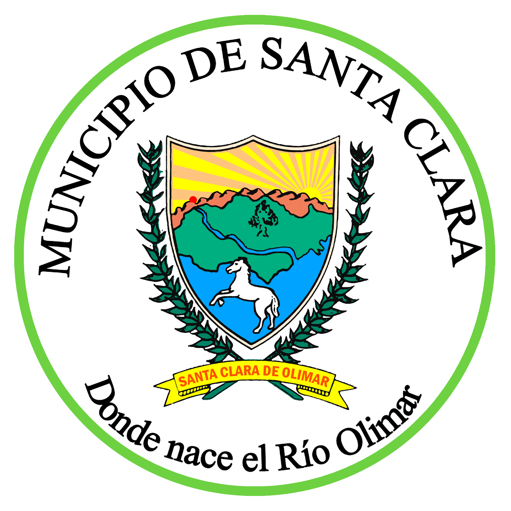
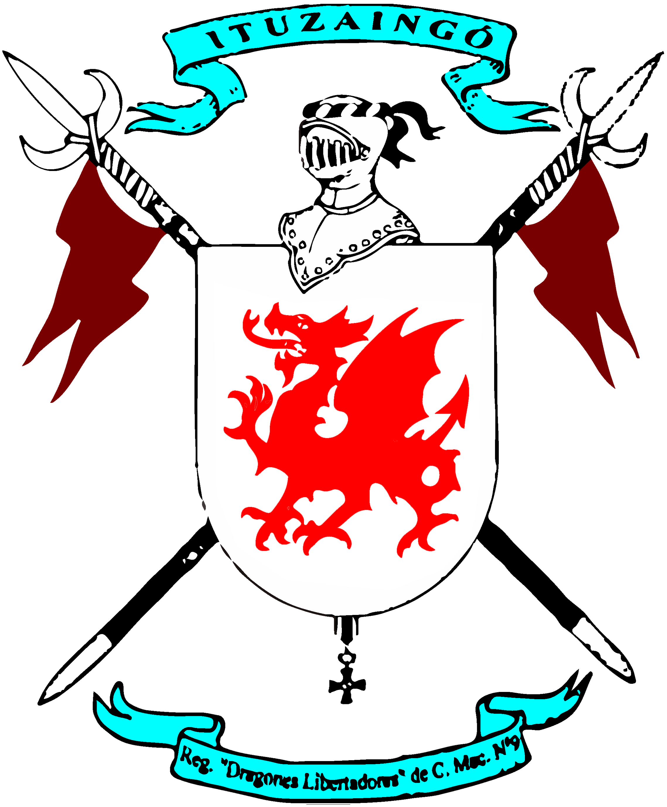

¡Nueva fecha confirmada para 2026!
7 y 8 de Marzo
(Cupos limitados)
La Ultramaratón Cuchilla Grande es una competencia trail
running sin fines de lucro creada
por corredores
para corredores.
Con distancias de 10, 36, 50 y 100 Kms pondrás al limite tu
resistencia mental y física.
Santa Clara de Olimar, Treinta y Tres, Uruguay

Se desarrolla en un terreno mixto que combina diversas
superficies: tierra, asfalto, pasto, barro y a través de cañadas.
Es una carrera de carácter rústico y cuenta con muchos desafíos
que la convierten en un verdadero reto.
Servicios
- Medallas finisher
- Premios por categorías
- Kit corredor
- Cronometraje
- Alojamiento
- ¡Y mucho más!
Alojamiento
Para una mejor experiencia ofrecemos
alojamientos gratuitos
destinados a los participantes para que se relajen y se preparen física y mentalmente antes de la
carrera.
Asimismo, la noche previa al evento se incluye una cena que servirá como punto de encuentro entre todos los corredores.
Asimismo, la noche previa al evento se incluye una cena que servirá como punto de encuentro entre todos los corredores.
Organiza
Apoya
Colabora
-  Municipio de Santa Clara
Apoya
- Secretaría Nacional del Deporte
-  Regimiento "Dragones Libertadores" de C.M. Nº 9
- Run Santa Clara
Colabora
- ANCAP "La Cataluña"
- Minimercado "Victoria"
- Estancia "La Victoria"
- Establecimiento "La Brasilera"
- Farmacia "Bengoechea"
-
Fotografía:
Oscar Viera Díaz